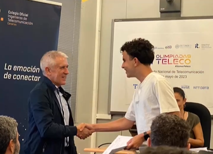
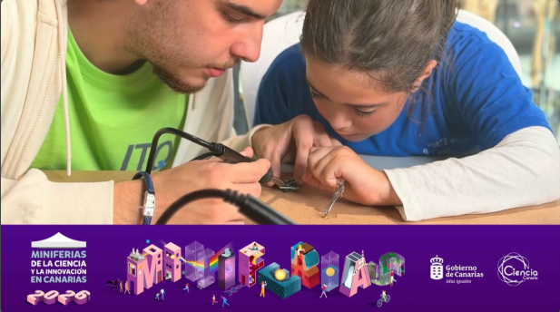

Tecnico en Sistemas Microinformaticos y Redes
Me apasiona la electrónica, el mantenimiento de equipos y las redes informaticas.
ContactameSoy Hugo Rodriguez, tengo formación como Técnico en Sistemas Microinformaticos y Redes (SMR). Me gusta mucho todo lo relacionado con los equipos informaticos, la electrónica y la automatización.
He participado en las Olimpiadas Nacionales de Telecomunicacion y he dado talleres en el Museo Elder de Las Palmas de Gran Canaria.

Cree un sistema de riego automatico usando Arduino en la Universidad de Las Palmas de Gran Canaria. El sistema usa sensores de humedad para saber cuando la planta necesita agua y enciende una bomba automaticamente. Lo presente en las Olimpiadas Nacionales de Telecomunicacion.
Tecnologias usadas: Arduino, C++, Sensores de humedad, Electronica

Diseñe y di talleres practicos de electronica y soldadura en el Makeathon del Museo Elder de Las Palmas. Los talleres eran para acercar la tecnologia a jovenes. Esto fue parte de las Miniferias de la Ciencia y la Innovacion en Canarias 2026.
Tecnologias usadas: Electronica, Soldadura, Circuitos basicos
Si quieres contactarme rellena este formulario: